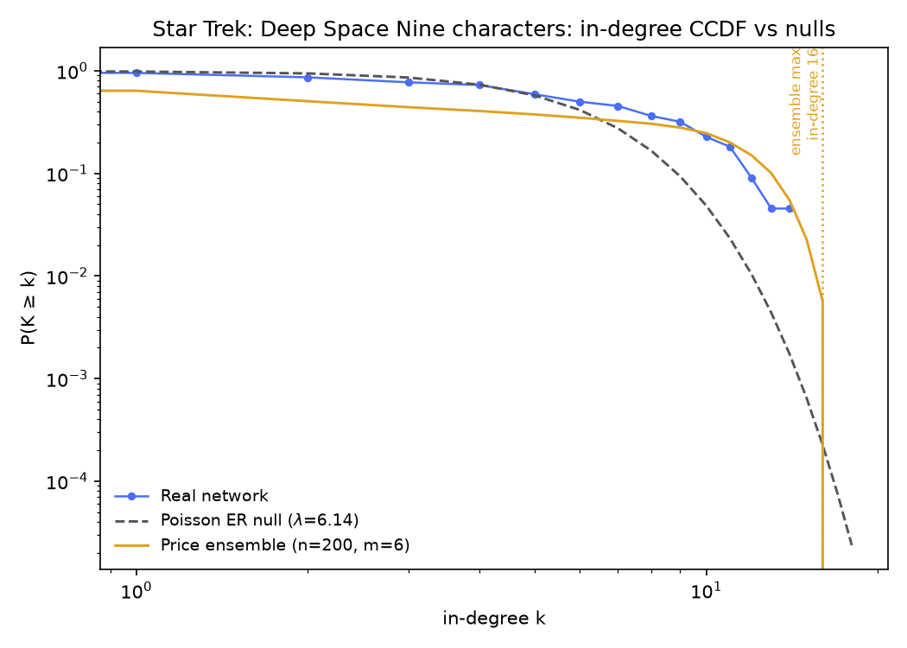
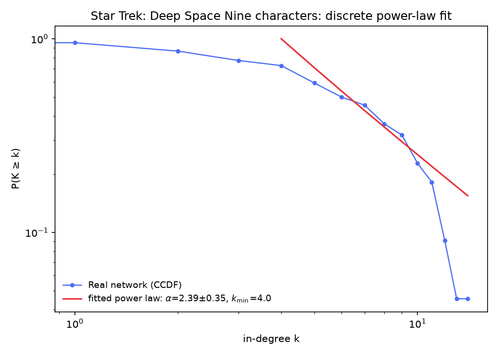

Is Sisko an accident?
Running the Week 2 test suite on the 22 Deep Space Nine character pages — the minimal cast where the null models have real authority, and one infiltrator from a different series nobody links to at all.
Running the Week 2 test suite on the 22 Deep Space Nine character pages — the minimal cast where the null models have real authority, and one infiltrator from a different series nobody links to at all.
Fifth dataset, same four tests: the 22 pages reachable in Wikipedia's Category: Star Trek: Deep Space Nine characters (redirects resolved; crawled 2026-09-10), with 135 directed edges between them. Nearly the Silmarillion's size (21 nodes), and like it this network is dense by cast standards: mean in- and out-degree 6.14, ranges 0–14 in and 2–12 out, one weakly connected component of 21 nodes — plus exactly one isolate.
The isolate is a gift for testing how reusable the Week 2 pipeline is: Category: Deep Space Nine also contains Tuvok — a Voyager character — whose article links to no other page in this node set and is linked by none of them. He keeps his node, has no edges, and every statistic on this page has to live with that.
The hub race isn't a race: Benjamin Sisko is cited by 14 of the other 21 pages, Worf by 12, Julian Bashir and Kira Nerys by 11, Odo by 10. Is 14 distinctive, or is this a Silmarillion case — chance that can't be ruled out? Same order as ever: chance, degree-preserving chance, growth, and the individual level.
So far, every small dataset divided the same way: Silmarillion — chance can't be ruled out; ASOIAF and Middle-earth — chance rejected. Deep Space Nine is only a whisker larger, and the ER draw isn't shy: across 300 offline draws on the same 22 nodes and 135 edges, the biggest hub's in-degree ranged 8–15 (mean 10.2, sd 1.1).
Sisko's 14 is inside that spread — one lucky draw would beat him, and the mean is six pages below. His 14 is about 3.4 standard deviations above the random mean, which on 300 draws isn't far off the possibility of seeing it. Verdict here: yet another hub that chance alone can be the best explanation of. Draw your own random network and watch it happily produce a Sisko-sized hub.
Each draw independently places 135 directed edges among 22 nodes at random (no self-loops, no repeats) and plots the resulting in-degree CCDF against the real network's.
Same degree-preserving directed shuffle — chains a→b, b→c, c→d rewired to a→c, c→b, b→d — so every crew member keeps their exact in- and out-degree. Same two statistics on the undirected projection (an edge if either article links to the other; 92 undirected edges):
Offline, 300 shuffle realizations (3,000 swaps each). Clustering: null mean 0.6016 (sd 0.0293) vs. real 0.5786 — the third dataset in a row where the degree sequence carries the triangles outright (z ≈ −0.8, p ≈ 0.77). On a 6-person senior staff linking each of 12 mid-degree crew members, keeping link counts fixed and re-dealing produces the same triangle density; nothing here needs a friendship clique to survive.
Reciprocity keeps the department's record unbroken: null mean 0.3568 (sd 0.0393) vs. real 0.6370 — z ≈ 7.1, beyond every one of the 300 shuffles (p ≈ 0). Two-thirds of DS9 citations are mutual — Sisko links Worf and Worf links Sisko — which the degree-preserving null produces under half as often. This is now the pattern of the whole Week 2 mini-series: the wiring's two-way rate is the one structure the null can't fake, on every single cast and canon we've tested.
Run the same test yourself: pick a statistic, run some shuffles, and watch the null build up.
Each shuffle is a fresh copy of the real network, degree-preserving-swapped from scratch — not a running chain — matching how the offline reference numbers above were produced (with fewer swaps per realization here, for responsiveness).
One property the shuffle truly cannot probe: the component partition, which is invariant under a chain-rewire by construction (no chain a→b→c→d can cross between weakly connected components). All 300 realizations leave the network as a 21-node giant plus the same lonely Tuvok — sd 0. Unlike the Marvel network, whose component question was real, here the invariance is a structural fact about the method rather than anything the data could have said. So no histogram above.
Directed preferential attachment — the Price model, parameters matching this density: each node joins with m outgoing links, target weighted by current in-degree. Mean out-degree 6.14 → trials at m = 5, 6, 7 (50 each).
Price(m=5) trials reached max in-degree 13–16 (mean 14.3), Price(m=6) 13–16 (mean 14.3), Price(m=7) 12–15 (mean 13.8) — Sisko's 14 is inside the model's spread at every m tried. Growth-plus-preference neither overshoots him (Marvel did that to Spider-Man) nor claims to need any such mechanism.
And the Price hypothesis has the same structural blind spot as on the Marvel page: by construction, everyone who joins attaches — the model can't produce Tuvok. Deep Space Nine, middle-man the Marvel analysis called "structurally impossible," turns out to be real: a cast member, from a neighboring show, with no edges at all. Between Sisko's hub being chancy and Tuvok's edges being impossible in the model, the network's one structural fact the model fails at is its smallest one.
Move the slider and regenerate to see for yourself.
Grows a fresh directed preferential-attachment network to n=22 nodes with the chosen m, then plots its in-degree CCDF against the real network's.
Preferential attachment depends on history: characters arrive one at a time, and each newcomer is more likely to connect to whoever's already popular, so an early lead can snowball into a hub like Sisko. But what if the station's cast was born all at once?
If all 22 characters existed simultaneously, there'd be no established popularity for a newcomer to follow — everyone would start with the same shot at new connections. That's the counterfactual below: a second model, the same 22 characters and roughly the same edge budget (m = 6 wires about 132 edges against the real 135), that links nodes uniformly at random instead of preferring the well-connected. It's not a claim about how the DS9 article network actually came to exist — it's a way of asking how much of Sisko's hub could come from history alone.
Sequential growth adds one character at a time, wiring each newcomer's m links proportional to how connected existing characters already are (the same rule as above). Big Bang creates all 22 at once and wires the same m links per character uniformly at random — no regard for who's already connected. Switch models or click "New universe" for a fresh run; node size shows degree, and the largest hub is highlighted in gold. Hover a node (mouse only) for its name and degree.
Hover a node to see who occupies it and how connected it is in this run.
Run each model a few times at the same m. Even at 22 nodes the contrast shows, but it's narrower than Marvel's: in a network this small, uniform random wiring already hands most characters 4–9 links, so the Big Bang cast never looks totally flat — across 200 offline runs its biggest hub ranged 8–15 (mean 10.1). Sequential growth at the same m lands higher and tighter: 13–16 (mean 14.3), exactly where Sisko's real 14 sits. Whoever gets ahead early keeps attracting a disproportionate share of new links, and on a 22-person station "early" means almost immediately.
So the two stories — "Sisko could be chance" (the ER verdict) and "Sisko is what growth produces" (this one) — are both live at this scale, and this page can't arbitrate between them. What it can say: a hub like Sisko is consistent with plain history-free chance and with rich-get-richer growth, and only a bigger cast could tell those hypotheses apart. One thing neither model can produce, though: Tuvok. Both wire every character on arrival or at birth — an isolate is structurally impossible in either, which is why the stowaway with zero edges stays the one fact these generative stories can't tell.
Exact definitions, as everywhere else: undirected projection (a link either way counts one connection). A character's degree is their number of distinct neighbors; their average neighbor degree is the mean degree of those neighbors. Excluding the isolate Tuvok (degree 0 — no neighbors to be popular against), there are 21 connected characters. Network average ⟨k⟩ = 8.36 against the edge-weighted mean neighbor degree ⟨k²⟩⁄⟨k⟩ = 10.09 — 21% higher, one of the flattest gaps we've measured (Marvel's was 133%; the Silmarillion's 15%).
Individually: 13 of 21 (61.9%) have neighbors on average better connected than they are; 8 (38.1%) hold their own; zero ties. Two characters' degree is ≥ every neighbor's — Benjamin Sisko, and Worf, the station's two most-cited pages. Like the Silmarillion, this is a cast of mostly-equals where the paradox mostly shows up as "the well-connected are connected to hubs."
Search for a character below to see their own numbers.
Each dot is one connected character (own degree vs. average neighbor degree, log-log). The dashed diagonal marks equality: above it, your neighbors out-rank you on average; below it, you out-rank them. Click a dot or search a name.
No character selected yet — click a dot or find one above.
The same closing protocol the Marvel page used, run on the DS9 crawl: the in-degree CCDF
P(K ≥ k) against two nulls — an ER random graph, whose in-degree
is exactly Poisson with λ = 135/22 ≈ 6.14,
and a 200-seed ensemble of Price graphs (N = 22, m = 6 —
mean out-degree ≈ 6.1, matching ours), with the ensemble maximum marked. A discrete power-law
fit (Clauset–Shalizi–Newman MLE, via the powerlaw package) then summarizes the
tail: exponent α̂ with its standard error, and a self-selected cutoff k̂min.


Not demonstrably non-random — the sharpest contrast with Marvel. Under the Poisson null, a Sisko-sized hub isn't a freak: the expected number of characters with in-degree ≥ 14 is about 0.097, so a cast of 22 has roughly a 9% chance of producing at least one such hub under pure chance. (Marvel's equivalent: a degree-106 character was 3 × 10−89 off the Poisson scale, and 21 characters cleared in-degree 20 where 0.0012 were expected.) Here even in-degree ≥ 12 — Worf's 12 — is expected 0.51 times per draw and seen twice. The ER verdict from the first section survives the fancier look: at this size, chance is not rejected.
Not heavier than Price, either. The 200-seed ensemble at m = 6 produced max in-degrees of 11–16 (mean 14.3): Sisko's 14 sits inside the ensemble's spread, and its own maximum clears him by only two. On Marvel the real hub (106) nearly doubled the BA ensemble max (77); here the model and the data are the same size, which is another way of saying the data can't catch the model being wrong.
Neither, strictly — with an extra reason at this scale. The fit rests on just 16 tail points (k ≥ 4 of 21 cited characters), and the standard error alone (± 0.35) is ~15% of α̂. Worse, past k ≈ 11 the real CCDF bends below the fitted line: the tail is shorter than a power law, not longer. That's what a hard ceiling looks like — in a 22-node network nobody can be cited more than 21 times, and a dense little world simply runs out of citers. "Scale-free" language barely applies to a distribution that structurally cannot extend.
What we can't conclude (for this question):
Pulling the four sections together:
So: this time, yes — Sisko may well be an accident of the draw, and the same null models that eliminated chance elsewhere leave Deep Space Nine's character graph largely explained by its degree sequence plus one honest structural fact: the regular crew genuinely cite each other both ways. The pipeline's big little dataset: nearly everything visible in the Marvel and ASOIAF hubs disappears at this scale — except reciprocity, which never does.
analysis/build_week2_reference.py ds9, run against the crawled data in
data/Star_Trek:_Deep_Space_Nine_characters/; it writes
data/Star_Trek:_Deep_Space_Nine_characters/ds9_week2_summary.json. The fit
section's figures and numbers come from analysis/build_week2_fit_reference.py ds9
(networkx + powerlaw + matplotlib in analysis/.venv), which appends the
fit key to the same JSON. Every interactive figure on this page recomputes its
own live version of the same algorithm in your browser — nothing here is hand-typed separately
from the code that produced it.